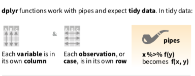

Chapter 2 環境設定與基本觀察
第一部分
引入需要用到的套件
#library(tidyverse)
library(dplyr)
library(nycflights13)
library(SportsAnalytics)
library(tibble)
fetch_NBAPlayerStatistics("17-18") -> NBA1718
mtcars %>% rownames_to_column(var = "car_name") -> mtcars
# 若無法成功，請先下載套件。
# 我們只要觀察2017-2018球季的資料。引入資料
flights
NBA1718基本觀察函數
在「探索式資料分析」我們一定會需要去認識資料型態（Data type)，以及變數本身定義（The Domain）。
基本上四大資料型態有numeric(數值)，interger(整數)，character(字串)，logic(布林變數)。
這邊一共要介紹：?、head() 、str()、rename
?的功能與RStudio介面中，直接查詢Help是一樣的。基本上包含套件、函數、資料集都可以查詢。
?flights
?dplyrhead函數會顯示資料集的前六筆資料。
head(flights)## # A tibble: 6 x 19
## year month day dep_time sched_dep_time dep_delay arr_time
## <int> <int> <int> <int> <int> <dbl> <int>
## 1 2013 1 1 517 515 2 830
## 2 2013 1 1 533 529 4 850
## 3 2013 1 1 542 540 2 923
## 4 2013 1 1 544 545 -1 1004
## 5 2013 1 1 554 600 -6 812
## 6 2013 1 1 554 558 -4 740
## # ... with 12 more variables: sched_arr_time <int>, arr_delay <dbl>,
## # carrier <chr>, flight <int>, tailnum <chr>, origin <chr>, dest <chr>,
## # air_time <dbl>, distance <dbl>, hour <dbl>, minute <dbl>,
## # time_hour <dttm>str函數則是以條列式來概覽整個資料集。
str(flights)## Classes 'tbl_df', 'tbl' and 'data.frame': 336776 obs. of 19 variables:
## $ year : int 2013 2013 2013 2013 2013 2013 2013 2013 2013 2013 ...
## $ month : int 1 1 1 1 1 1 1 1 1 1 ...
## $ day : int 1 1 1 1 1 1 1 1 1 1 ...
## $ dep_time : int 517 533 542 544 554 554 555 557 557 558 ...
## $ sched_dep_time: int 515 529 540 545 600 558 600 600 600 600 ...
## $ dep_delay : num 2 4 2 -1 -6 -4 -5 -3 -3 -2 ...
## $ arr_time : int 830 850 923 1004 812 740 913 709 838 753 ...
## $ sched_arr_time: int 819 830 850 1022 837 728 854 723 846 745 ...
## $ arr_delay : num 11 20 33 -18 -25 12 19 -14 -8 8 ...
## $ carrier : chr "UA" "UA" "AA" "B6" ...
## $ flight : int 1545 1714 1141 725 461 1696 507 5708 79 301 ...
## $ tailnum : chr "N14228" "N24211" "N619AA" "N804JB" ...
## $ origin : chr "EWR" "LGA" "JFK" "JFK" ...
## $ dest : chr "IAH" "IAH" "MIA" "BQN" ...
## $ air_time : num 227 227 160 183 116 150 158 53 140 138 ...
## $ distance : num 1400 1416 1089 1576 762 ...
## $ hour : num 5 5 5 5 6 5 6 6 6 6 ...
## $ minute : num 15 29 40 45 0 58 0 0 0 0 ...
## $ time_hour : POSIXct, format: "2013-01-01 05:00:00" "2013-01-01 05:00:00" ...rename，可以將更改變數名稱，增加易讀性，不然有時候變數名稱很長。
#新變數名稱（放左邊）= 舊的變數名稱
flights %>% rename(total_distance = distance)## # A tibble: 336,776 x 19
## year month day dep_time sched_dep_time dep_delay arr_time
## <int> <int> <int> <int> <int> <dbl> <int>
## 1 2013 1 1 517 515 2 830
## 2 2013 1 1 533 529 4 850
## 3 2013 1 1 542 540 2 923
## 4 2013 1 1 544 545 -1 1004
## 5 2013 1 1 554 600 -6 812
## 6 2013 1 1 554 558 -4 740
## 7 2013 1 1 555 600 -5 913
## 8 2013 1 1 557 600 -3 709
## 9 2013 1 1 557 600 -3 838
## 10 2013 1 1 558 600 -2 753
## # ... with 336,766 more rows, and 12 more variables: sched_arr_time <int>,
## # arr_delay <dbl>, carrier <chr>, flight <int>, tailnum <chr>,
## # origin <chr>, dest <chr>, air_time <dbl>, total_distance <dbl>,
## # hour <dbl>, minute <dbl>, time_hour <dttm>範例
若完成，請直接貼到open chat
- 請用
?查詢他是一個怎麼樣的資料集？ - 請用
str或者head函數，觀察他哪些資料型態的變數較多？ - 請用
rename更改變數hp，變成horsepower
mtcars?mtcarsstr(mtcars)mtcars %>% rename(horsepower = hp)自主練習
請問(NBA1718)這個資料集裡面哪一種Data Type最多？
其中一個變數，GamesStarted，是指該球員先發場次，我覺得把它改成Games_Started較佳，請問該怎麼做？